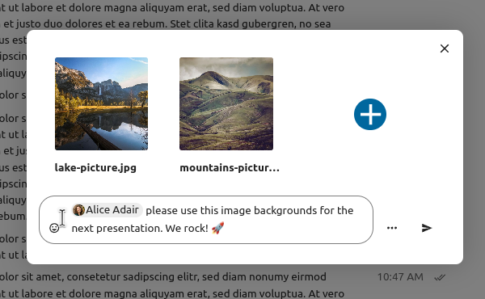
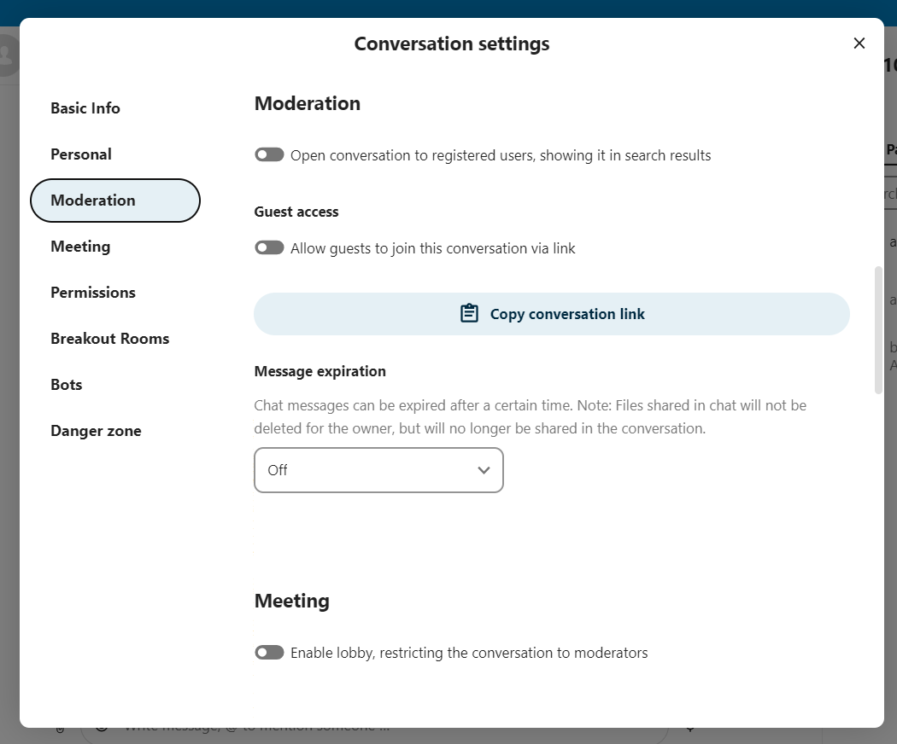
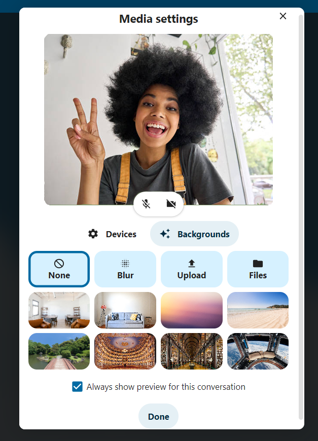

Podstawy NextCloud Talk
Nextcloud Talk umożliwia czatowanie i prowadzenie połączeń wideo na własnym serwerze.
Czaty i połączenia odbywają się w rozmowach. Możesz utworzyć dowolną liczbę rozmów. Istnieją dwa rodzaje rozmów:
Rozmowy jeden na jednego. Tutaj prowadzisz prywatny czat lub połączenie z innym użytkownikiem Talk. Nie możesz dodawać innych osób do tej rozmowy, ani udostępniać jej za pomocą linku. Rozpoczynasz bezpośredni czat jeden na jednego, szukając innego użytkownika na pasku wyszukiwania, a następnie klikając jego nazwę.
Rozmowy grupowe. Oprócz osoby, która utworzyła rozmowę, w rozmowie grupowej może uczestniczyć dowolna liczba osób. Rozmowę grupową można udostępnić publicznie za pomocą linku, dzięki czemu zewnętrzni goście mogą dołączyć do rozmowy. Może być również wylistowany, aby inne osoby na Twoim serwerze Nextcloud mogły dołączyć do rozmowy.
Tworzenie czatu
Możesz utworzyć bezpośredni czat jeden na jednego, wyszukując nazwę użytkownika, grupę lub krąg i klikając ją. Dla jednego użytkownika natychmiast tworzona jest rozmowa i możesz rozpocząć czat. W przypadku grupy lub kręgu możesz wybrać nazwę i ustawienia przed utworzeniem rozmowy i dodaniem uczestników.

If you want to create a custom group conversation, click the button next to the search field and filters button and then on Create a new conversation.

You can then pick a name for the conversation, put a description, and set up an avatar for it (with uploaded photo or emoji), and select if the conversation should be open to external users and if other users on the server can see and join the conversation.

W drugim kroku możesz dodać uczestników i zakończyć tworzenie rozmowy.

Możesz anulować tworzenie rozmowy, klikając w dowolnym momencie poza białym obszarem menu.

View all open conversations
You can view all the conversations that you can join by clicking the button next to the search field and filters button and then on Join open conversations.

Filter your conversations
You can filter your conversations using the filter button located next to the search field. There are two options for filtering: 1. Filter unread mentions: This option allows you to view group conversations with unread mentions or unread one-on-one conversations. 2. Filter unread messages: This option allows you to view all unread messages in all joined conversations.

You can then clear the filter from the filters menu.

Udostępnianie plików na czacie
Możesz udostępniać pliki na czacie na 3 sposoby.
Po pierwsze, możesz je po prostu przeciągnąć i upuścić na czacie.

Po drugie, możesz wybrać plik z Nextcloud Files lub menedżera plików, wybierając mały spinacz i wybierając miejsce, z którego chcesz wybrać plik.


You can add more files until you are done and decide to share the files. You can also add a text caption to your shared files, providing a brief description or context.
{kind=link}
Wszyscy użytkownicy będą mogli kliknąć pliki, aby je przeglądać, edytować lub pobierać, niezależnie od tego, czy posiadają konto użytkownika. Użytkownicy posiadający konto będą mieli automatycznie udostępniony plik, podczas gdy zewnętrzni użytkownicy-goście otrzymają je udostępnione jako łącze publiczne.

Wstawianie emoji
Emoji możesz dodać za pomocą selektora po lewej stronie pola wprowadzania tekstu.

Using Markdown
You can enhance your messages with a markdown syntax support. See list for usage:
Headings and dividers
# Heading 1
## Heading 2
### Heading 3
#### Heading 4
##### Heading 5
###### Heading 6
Heading
===
Normal text
***
Normal text
Inline decorations
**bold text** __bold text__
*italicized text* _italicized text_
`inline code` ``inline code``
```
.code-block {
display: pre;
}
```
Lists
1. Ordered list
2. Ordered list
* Unordered list
- Unordered list
+ Unordered list
Quotes
> blockquote
second line of blockquote
Setting reminder on messages
You can set reminders on specific messages. If there’s an important message you want to be notified about later, simply hover over it and click on the reminder icon.

In the submenu, you can select an appropriate time to receive a notification later.

Odpowiadanie na wiadomości i nie tylko
Możesz odpowiedzieć na wiadomość, używając strzałki, która pojawia się po najechaniu na wiadomość.

W menu ... możesz także odpowiedzieć prywatnie. Otworzy się czat jeden na jednego.

Tutaj możesz również utworzyć link bezpośredni do wiadomości lub oznaczyć ją jako nieprzeczytaną, aby przewinąć ją z powrotem, gdy wejdziesz na czat. Jeśli jest to plik, możesz go wyświetlić w Files (Pliki).
Zarządzanie rozmową
W nowej rozmowie zawsze jesteś moderatorem. Na liście uczestników możesz promować innych uczestników jako moderatorów za pomocą menu ... po prawej stronie ich nazwy użytkownika, przypisywać im niestandardowe uprawnienia lub usuwać ich z rozmowy.
Changing permissions of a user that joined a public conversation will also permanently add them to the conversation.

Moderators can configure the conversation. Select Conversation settings from the ... menu of the conversation on the top to access the settings.

Tutaj możesz skonfigurować opis, dostęp gościa, czy rozmowa jest widoczna dla innych na serwerze i nie tylko.
{kind=link}
Messages expiration
A moderator can configure message expiration under the Conversation settings within the Moderation section. Once a message reaches its expiration time, it is automatically removed from the conversation.
The available expiration durations are 1 hour, 8 hours, 1 day, 1 week, 4 weeks, or never (which is the default setting).

Rozpoczęcie połączenia
When you’re in a conversation, you can start a call any time with the Start call button. Other participants will get notified and can join the call.

If somebody else has started a call already, the button will change in a green Join call button.

Podczas rozmowy możesz wyciszyć mikrofon i wyłączyć wideo za pomocą przycisków po prawej stronie górnego paska lub używając skrótów M do wyciszenia dźwięku i V do wyłączenia wideo. Możesz także użyć spacji, aby włączyć wyciszenie. Gdy jesteś wyciszony, naciśnięcie spacji spowoduje wyłączenie wyciszenia, dzięki czemu będziesz mógł mówić, dopóki nie zwolnisz spacji. Jeśli nie masz wyciszenia, naciśnięcie spacji wyciszy Ciebie, dopóki nie puścisz.
Możesz ukryć swoje wideo (przydatne podczas udostępniania ekranu) za pomocą małej strzałki tuż nad strumieniem wideo. Przywróć to z powrotem małą strzałką.
Możesz uzyskać dostęp do swoich ustawień i wybrać inną kamerę internetową, mikrofon i inne ustawienia w menu ... na górnym pasku.

From media settings dialog, you can also change the background of your video.
{kind=link}
You can change other settings in the Talk settings dialog.

Zmiana widoku w połączeniu
Możesz przełączać widok w połączeniu za pomocą małej ikony czterech bloków w prawym górnym rogu między widokiem promowanym a widokiem siatki. Widok siatki pokaże wszystkich o jednakowych rozmiarach, a jeśli osoby nie mieszczą się na ekranie, po lewej i prawej stronie pojawią się przyciski, które pozwolą Tobie nawigować.

Promowany widok pokazuje duży głośnik, a innych w rzędzie poniżej. Jeżeli osoby nie mieszczą się na ekranie, po lewej i prawej stronie pojawią się przyciski umożliwiające nawigację.